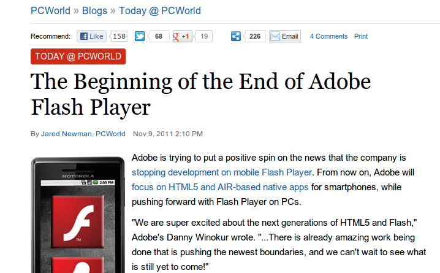
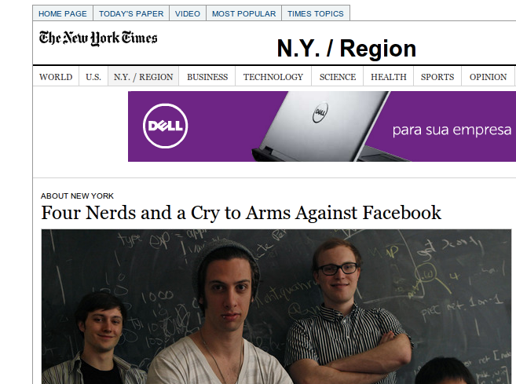
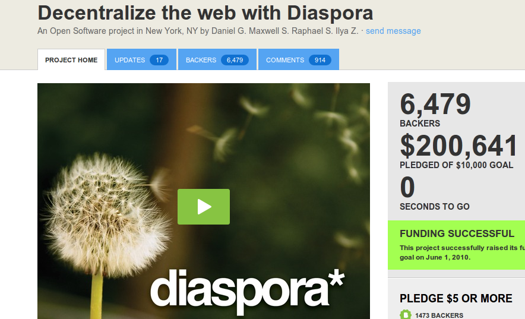
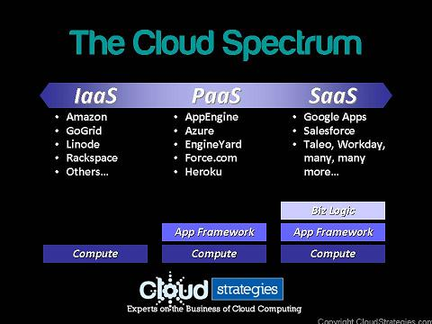

Presenter Notes
HTML5

Presenter Notes
Javascript

Presenter Notes
Javascript

Presenter Notes
CSS3

Presenter Notes
Rails

Presenter Notes
Ruby

Presenter Notes
NoSQL





1 2 3 4 5 6 7 8 9 10 11 12 13 14 15 16 17 18 19 | 1.day.from_now
=> Thu, 10 May 2012 15:32:53 UTC +00:00
1.day.from_now
=> Thu, 10 May 2012 15:32:57 UTC +00:00
1.year.ago
=> Mon, 09 May 2011 15:33:00 UTC +00:00
10.years.from_now
=> Mon, 09 May 2022 15:33:07 UTC +00:00
10.years.from_now > 9.years.from_now
=> true
("a".."f").to_a.shuffle
=> ["b", "c", "e", "f", "d", "a"]
require 'prime'
=> true
Prime.take(10)
=> [2, 3, 5, 7, 11, 13, 17, 19, 23, 29]
|
por John Ousterhout no curso WebApplications da Stanford University:
| Table of Contents | t |
|---|---|
| Exposé | ESC |
| Full screen slides | e |
| Presenter View | p |
| Source Files | s |
| Slide Numbers | n |
| Toggle screen blanking | b |
| Show/hide slide context | c |
| Notes | 2 |
| Help | h |